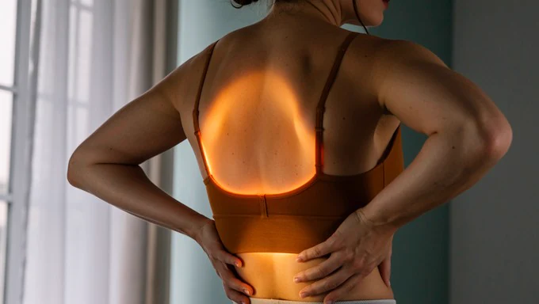

Kręgosłup · 7 min czytania
Masaż przy dyskopatii i bólu kręgosłupa

To jedno z najczęstszych pytań, jakie słyszymy przy telefonie: „mam dyskopatię, czy mogę przyjść na masaż?”. Uczciwa odpowiedź brzmi: czasem tak, czasem nie, a decyduje o tym to, co dokładnie dzieje się z Twoim kręgosłupem w tym tygodniu. Poniżej opisujemy, co masaż przy dyskopatii realnie daje, czego nie zrobi mimo obietnic, kiedy zamiast do gabinetu trzeba iść do lekarza i - co najważniejsze - kto w ogóle powinien taki masaż wykonywać.
Czym właściwie jest dyskopatia
Między kręgami leżą krążki międzykręgowe, potocznie nazywane dyskami. Z czasem tracą wodę i elastyczność, a przy przeciążeniu ich zewnętrzny pierścień może się uwypuklić albo pęknąć, tak że wewnętrzna część zaczyna uciskać na struktury obok, w tym na korzeń nerwowy. To właśnie ucisk na nerw odpowiada za ból promieniujący do nogi albo do ręki, mrowienie i uczucie osłabienia.
Ważne rozróżnienie: dyskopatia w opisie badania to nie to samo co ból. Zmiany w krążkach widać w rezonansie u bardzo wielu osób, które nic nie czują. Dlatego leczy się objawy i konkretnego człowieka, a nie zdjęcie.
Czego masaż nie zrobi
Trzeba to powiedzieć wprost, bo w internecie krąży sporo obietnic: żaden masaż nie „wstawia dysku na miejsce” i nie cofa zmian w krążku. Nie robi tego ani mocny ucisk, ani rozciąganie, ani urządzenie. Kto obiecuje wyleczenie dyskopatii w kilka sesji, obiecuje coś, czego nie może dostarczyć.
Masaż nie zastępuje też fizjoterapii. Przy dyskopatii to fizjoterapeuta układa program ćwiczeń, a ćwiczenia są tym, co realnie zmienia sytuację na dłużej. Masaż jest dodatkiem, który sprawia, że da się w tych ćwiczeniach uczestniczyć.
Co masaż naprawdę daje
Kiedy jeden odcinek kręgosłupa boli, mięśnie wokół niego napinają się obronnie i zostają napięte długo po tym, jak ostry epizod minie. To napięcie samo w sobie boli, ogranicza ruch i nie puszcza, dopóki ktoś się nim nie zajmie. I dokładnie tu masaż działa:
- Rozluźnia obronne napięcie przykręgosłupowe, pośladkowe i biodrowe, które przy bólu lędźwiowym potrafi być twardsze niż sam problem.
- Przywraca komfort ruchu na tyle, że łatwiej wykonywać zalecone ćwiczenia, a to one robią właściwą robotę.
- Poprawia sen, który przy bólu pleców psuje się pierwszy, a bez którego regeneracja stoi w miejscu.
- Zdejmuje wtórne przeciążenia po tygodniach chodzenia na jedną stronę, bo tak mniej bolało.
Kiedy masaż ma sens, a kiedy trzeba poczekać
W fazie ostrej, kiedy ból promieniuje do nogi, jest silny i narasta przy każdym ruchu, mocna praca w bolącym miejscu zwykle pogarsza sprawę. Nie znaczy to, że nie da się zrobić nic: delikatna praca z dala od objętego odcinka bywa pomocna, ale to decyzja podejmowana na miejscu, po rozmowie, nie przez telefon.
Najwięcej sensu masaż ma wtedy, gdy najostrzejsza faza minęła, a zostało napięcie, sztywność poranna i ograniczony zakres ruchu. To moment, w którym rozluźnienie mięśni przekłada się na realną różnicę w codziennym funkcjonowaniu.
Sygnały, z którymi idzie się do lekarza, a nie na masaż
Są sytuacje, w których gabinet masażu jest złym adresem, a zwłoka realnie szkodzi. Umów się z lekarzem, a przy dwóch ostatnich punktach szukaj pomocy tego samego dnia:
- ból po upadku, wypadku albo innym urazie;
- gorączka razem z bólem pleców;
- ból nocny, który budzi i nie ustępuje w żadnej pozycji;
- niewyjaśniona utrata wagi albo choroba nowotworowa w wywiadzie;
- narastające osłabienie nogi lub stopy, na przykład potykanie się o własną stopę;
- drętwienie okolicy krocza albo problem z kontrolą pęcherza lub jelit - to stan pilny.
Ta lista nie zastępuje konsultacji. Jeśli nie masz jeszcze rozpoznania, zacznij od lekarza, a dopiero potem przyjdź do nas z tym, co ustalił.
Kto powinien wykonywać masaż przy dyskopatii
To jest część, której nie warto pomijać. Masaż relaksacyjny może wykonać osoba po podstawowym kursie. Praca z kręgosłupem po rozpoznaniu dyskopatii wymaga odrębnego przygotowania, bo tutaj błąd nie kończy się na tym, że zabieg był nieprzyjemny.
Czego warto wymagać od osoby, której powierzasz plecy:
- Udokumentowanego wykształcenia w zawodzie - dyplomu technika masażysty albo ukończonej szkoły policealnej czy kierunku medycznego, nie samego weekendowego szkolenia.
- Certyfikatów z kursów ukierunkowanych na kręgosłup: masażu leczniczego, tkanek głębokich, technik powięziowych czy terapii punktów spustowych. Dobry terapeuta pokazuje je bez proszenia.
- Pytania o Twoje rozpoznanie na początku wizyty. Osoba, która nie pyta o wyniki badań i o to, gdzie promieniuje ból, pracuje na ślepo.
- Świadomości granic zawodu. Masażysta nie „nastawia kręgów”. Manipulacje kręgosłupa to osobna kompetencja, a przy aktywnej dyskopatii wykonane bez wskazań potrafią zaszkodzić.
- Ostrożności w obietnicach. „Wyleczymy dyskopatię w pięć wizyt” to sygnał ostrzegawczy, nie argument sprzedażowy.
Pytanie o kwalifikacje nie jest niegrzeczne i nikogo nie obraża. W naszym studiu pytamy o rozpoznanie przed pierwszym dotknięciem pleców, a jeśli obraz nam się nie zgadza albo objawy wyglądają na neurologiczne, odsyłamy do lekarza zamiast robić zabieg na wszelki wypadek.
Jak wygląda taka wizyta
Zaczynamy od rozmowy dłuższej niż zwykle: co pokazało badanie, od kiedy boli, czy ból promieniuje, co go nasila, jakie ćwiczenia zalecił fizjoterapeuta. Dopiero potem ustalamy zakres pracy. Zwykle jest to masaż zdrowotny całego ciała albo skupiony na plecach masaż pleców i karku, a przy utrwalonym napięciu wolniejsza i głębsza praca w ramach masażu tkanek głębokich.
Tempo jest wolniejsze niż przy zwykłym masażu, a informacja zwrotna od Ciebie ważniejsza. Ból podczas zabiegu nie jest tu miarą skuteczności: jeśli coś promieniuje albo drętwieje, mówisz od razu i zmieniamy sposób pracy.
Częste pytania
Czy masaż wyleczy dyskopatię?
Nie. Masaż nie cofa zmian w krążku międzykręgowym i nie zastępuje leczenia. Zmniejsza napięcie mięśni wokół bolącego odcinka, co u wielu osób wyraźnie poprawia komfort i ułatwia ćwiczenia, a to one dają trwały efekt.
Czy przy dyskopatii masaż może zaszkodzić?
Może, jeśli trafi w zły moment albo w niepowołane ręce. Mocna praca w fazie ostrej, przy promieniującym bólu, potrafi nasilić objawy. Ryzykowne są też manipulacje kręgosłupa wykonywane przez osobę bez odpowiednich uprawnień.
Czy potrzebuję skierowania albo wyników badań?
Skierowanie nie jest potrzebne, ale rozpoznanie tak. Przyjdź z tym, co ustalił lekarz, i z opisem badania, jeśli je masz. Bez tego pracujemy ostrożniej i węziej, bo nie wiemy, z czym mamy do czynienia.
Jakie kwalifikacje powinien mieć masażysta przy bólu kręgosłupa?
Udokumentowane wykształcenie w zawodzie, czyli dyplom technika masażysty lub równoważne, oraz certyfikaty z kursów ukierunkowanych na pracę z kręgosłupem: masaż leczniczy, tkanki głębokie, techniki powięziowe. Masz prawo o nie zapytać przed wizytą.
Ile wizyt potrzeba?
Przy napięciu, które zostało po ostrym epizodzie, różnicę czuć zwykle po pierwszej lub drugiej wizycie. Przy dolegliwościach ciągnących się miesiącami sensowniej myśleć o serii rozłożonej w czasie, prowadzonej równolegle z ćwiczeniami, niż o pojedynczym zabiegu.
Czy masaż zastąpi fizjoterapię?
Nie. Fizjoterapia przy dyskopatii jest podstawą, bo to ćwiczenia zmieniają sposób, w jaki kręgosłup znosi obciążenia. Masaż jest wsparciem, które zdejmuje napięcie i ułatwia wejście w ruch.
Ten tekst ma charakter informacyjny i nie zastępuje porady lekarskiej. Przy bólu kręgosłupa z objawami neurologicznymi skontaktuj się z lekarzem.